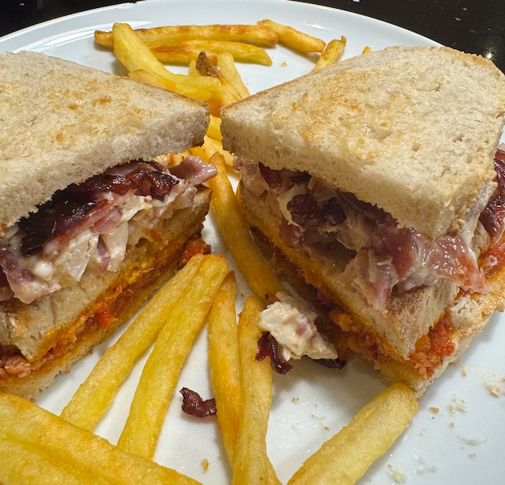

Chicken and Bacon Club

This is an attempt to recreate the chicken and bacon club sandwich from Costa Coffee circa 2010. The recipe is really too much to make in one go, you kinda need to have the pasta sauce left over from a previous day. Serve with chips.
Ingredients
- Red Onions
- 2 red onion sliced
- salt
- 2 tbsp brown sugar
- 2 tbsp red vinegar
- Pasta Sauce
- see Bacon and Tomato Pasta
- Chicken and Bacon
- 2 chicken breast, flattened
- salt and pepper
- ½ lemon
- 250g bacon
- mayonnaise
- Sandwich
- 100g gruyère cheese, grated
- 12 bread slices, lightly toasted
Method
Make the onions. Add onions, salt, sugar and vinegar to a small pan, and caramelize on medium to low heat. This takes 30+ min.
Pasta sauce. If the pasta sauce is already made, then warm in a small pan. You want to drive out most of the liquid, so it is drier than a normal pasta sauce. If it's not already made then follow the recipe here.
Make the chicken and bacon. Heat a frying pan to hot, add oil and chicken, salt and pepper. Turn down heat to medium and cook for 5 min. Squeeze over the lemon juice, flip and cook for another 5 min. Set aside and allow to cool. Deglaze the pan, and add deglaze to the onions. Fry bacon on medium heat, and allow fat to render.
Chop up chicken and bacon and mix with mayo.
Assemble the sandwich. Toast / pasta sauce and gruyère cheese / toast / chicken, bacon, mayo and red onions / toast.